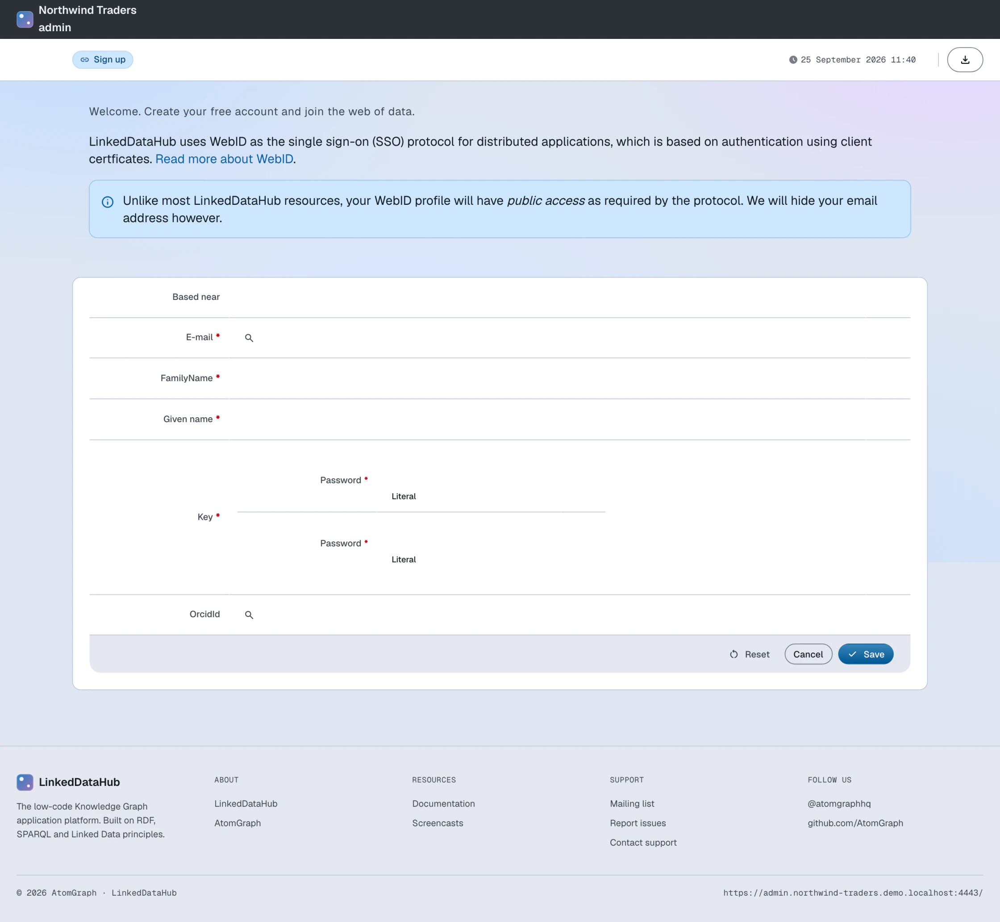

Get an account
How to get an account and log in to LinkedDataHub
In order to authenticate as the owner of a LinkedDataHub instance, you need to use the WebID authentication method.
Get certificate
LinkedDataHub uses WebID as the Single sign-on (SSO) protocol for distributed applications, which is based on authentication using TLS client certificates. Using WebID, you will be able to authenticate with every LinkedDataHub dataspace. Read more about WebID.
There are two ways to get a LinkedDataHub WebID: run your own instance or sign up to an existing one.
Run your own instance
Complete the setup to run your own instance of LinkedDataHub.
The ssl/owner/keystore.p12 file is your WebID certificate. The password is the owner_cert_password Docker secret value.
Sign up to an existing instance
Click the Sign up button and fill out the form with your details to get a WebID, as shown below.

You will get an email with a .p12 file attached, which is your WebID certificate. The certificate's password is the one you entered in the signup form.
The command line interface reads the PKCS12 (.p12) file directly — no conversion needed. Setup writes it to ssl/owner/keystore.p12.
curl needs a PEM version instead. Setup writes that too, to ssl/owner/cert.pem. A certificate received by email can be converted from PKCS12 to PEM with OpenSSL:
openssl pkcs12 -in cert.p12 -out cert.pem -nodes
Unlike most LinkedDataHub resources, your WebID profile will have public access as required by the protocol. Your email address, however, stays hidden.
Install certificate
The final step is to install the client certificate into your web browser. Import the .p12 file with your browser's certificate manager, using the certificate's password (from signup, or the owner_cert_password secret if you ran setup). Open the manager dialog following the steps below, depending on which browser you use:
- Google Chrome
- Settings > Advanced > Manage Certificates > Import...
- Mozilla Firefox
- Options > Privacy & Security > View Certificates... > Import...
- Apple Safari
- The file is installed directly into the operating system. Open the file and import it using the Keychain Access tool. Drag the .p12 file to the login section.
- Microsoft Edge
- Edge has no certificate manager of its own — install the file into the Windows certificate store. Read more here.
You need to install the certificate on all devices/browsers that you are using to access LinkedDataHub.
Log in
Open the LinkedDataHub instance in the browser you installed the certificate into. Using a local setup, it runs on https://localhost:4443/ by default.
With the certificate installed, there is no login procedure — you are automatically authenticated on all LinkedDataHub dataspaces. This is known as Single sign-on (SSO).
Dataspaces may make some or all of their documents public; you can browse those without authenticating. To reach protected (non-public) resources, or the administration dataspace, you have to be authenticated and authorized (authorizations can be requested).
Authenticated agents are not guaranteed to have access to all resources. Different access levels for different agents can be specified by the dataspace administrators.
Open the Login dropdown in the navigation bar and choose Login with Google to authenticate with your Google account.
If the email address of your Google account matches the dataspace owner's email address that was specified during setup, you will be authenticated as the owner with full control access rights.
Login with Google is only enabled if LinkedDataHub was configured with social login.
Open the Login dropdown in the navigation bar and choose Login with ORCID to authenticate with your ORCID account using OpenID Connect.
If the email address of your ORCID account matches the dataspace owner's email address that was specified during setup, you will be authenticated as the owner with full control access rights.
Login with ORCID is only enabled if LinkedDataHub was configured with social login.
Signed in? Next, request access to the documents you need.